Confiture de goyave
La goyave des Hauts, en confiture extra artisanale.
Au pied du Piton Hyacinthe, Elsa et Fred cultivent leurs fruits et leurs légumes, puis les transforment eux-mêmes : confitures, nectars, fruits séchés et café Bourbon pointu.
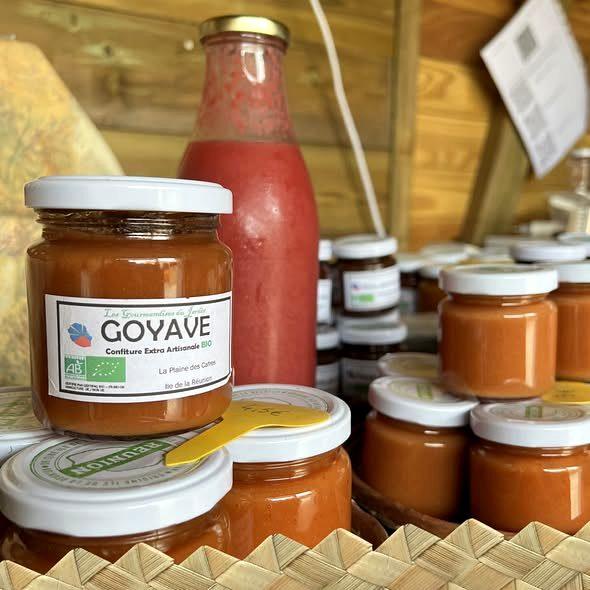
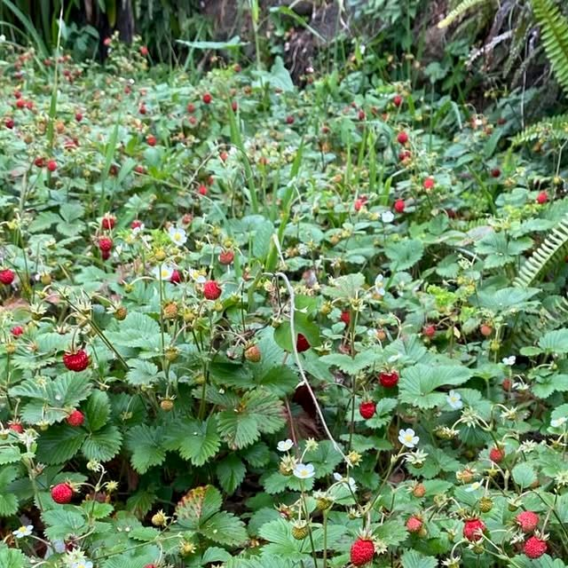
Une exploitation familiale : chaque fruit est cultivé, cueilli puis transformé sur place, du coupage au séchage.
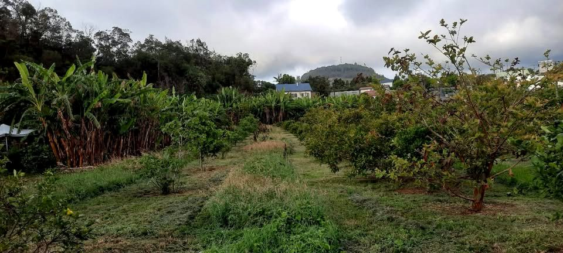
Fruits et maraîchage en agriculture biologique, dans l’air frais des Hauts.
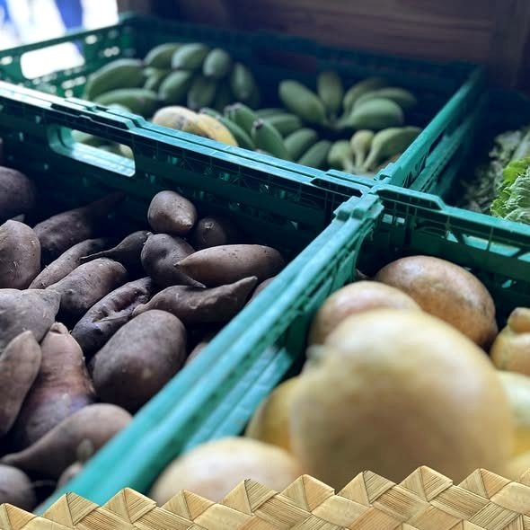
Des fruits et légumes de saison, cueillis à maturité.
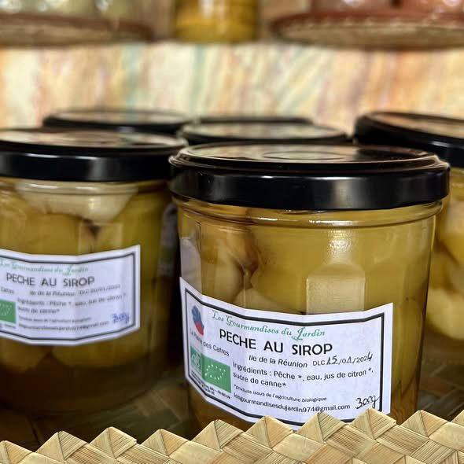
Confitures, sirops, nectars et fruits séchés, préparés à la ferme.
La goyave des Hauts, en confiture extra artisanale.
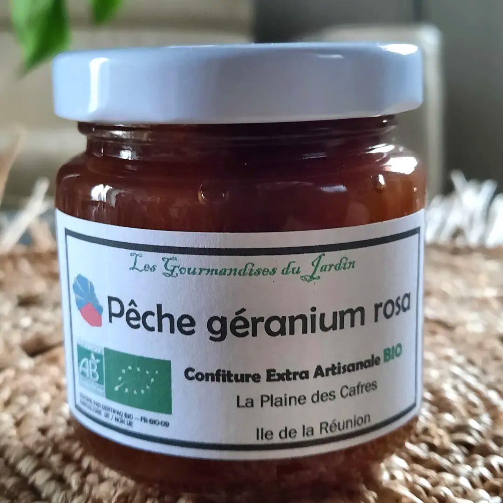
Une alliance parfumée, signée du jardin.
Pêches, eau, citron et sucre de canne.
Séchés sur l’exploitation, pour garder toute la saveur du fruit.
Le café emblématique de l’île, cultivé en bio.
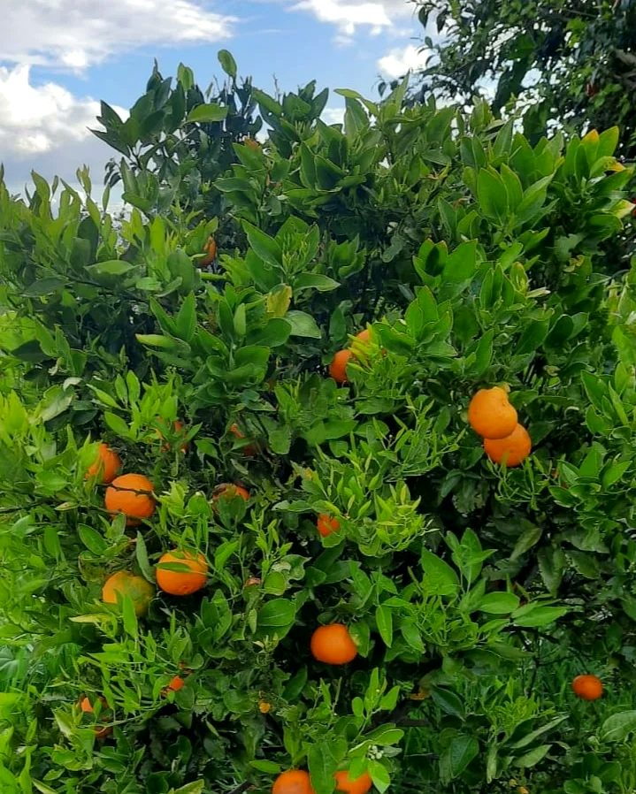
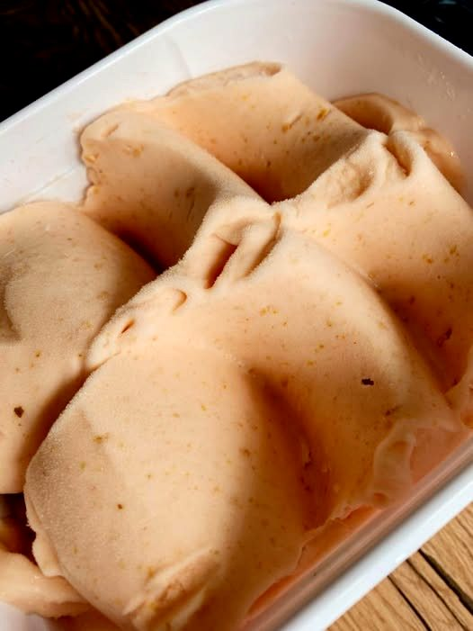
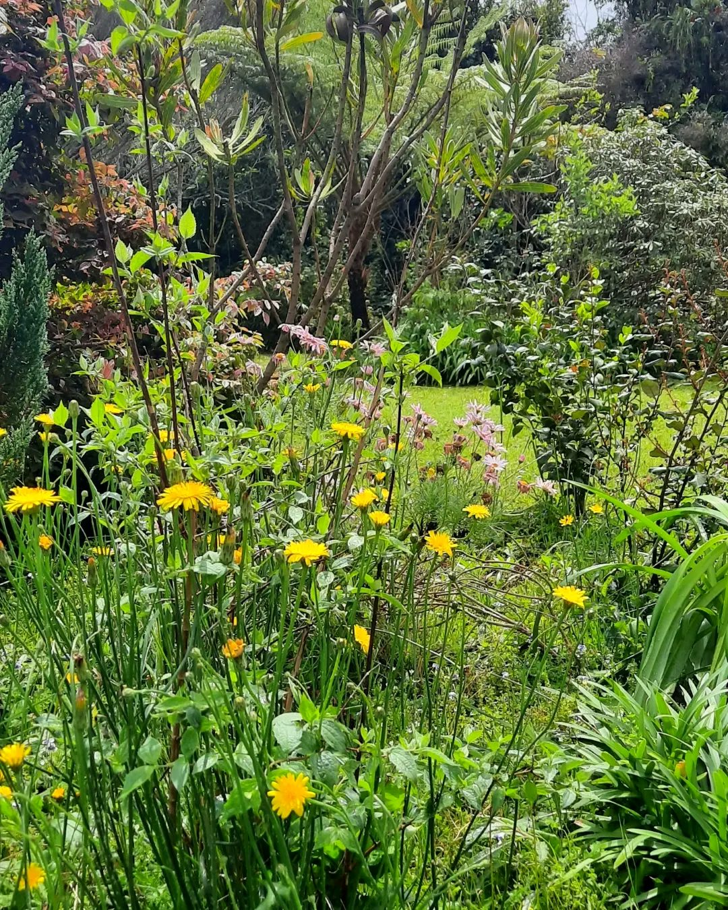
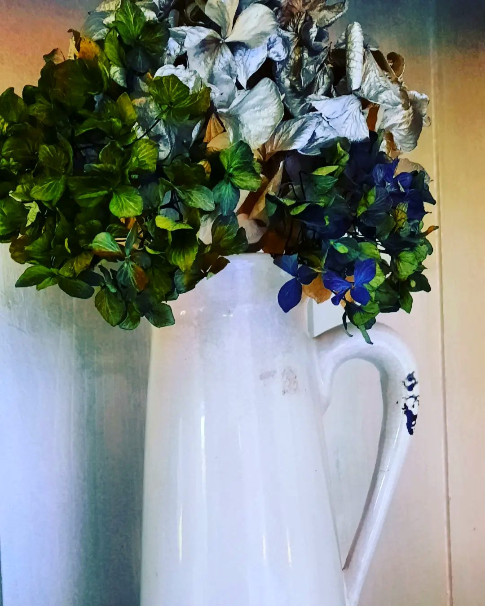
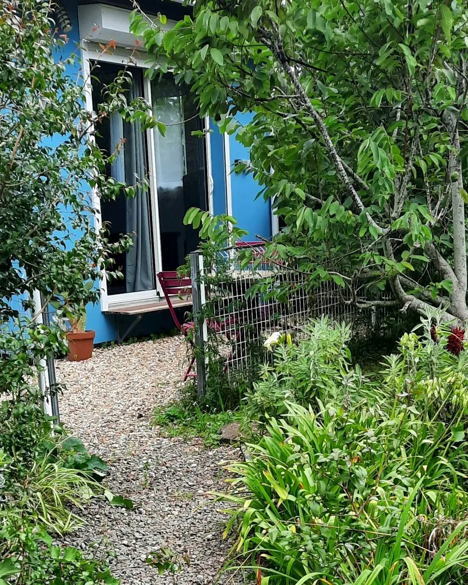
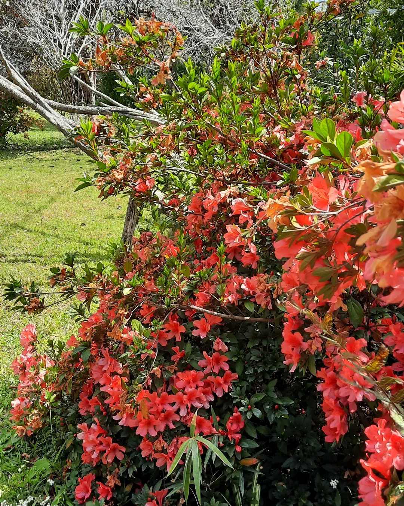
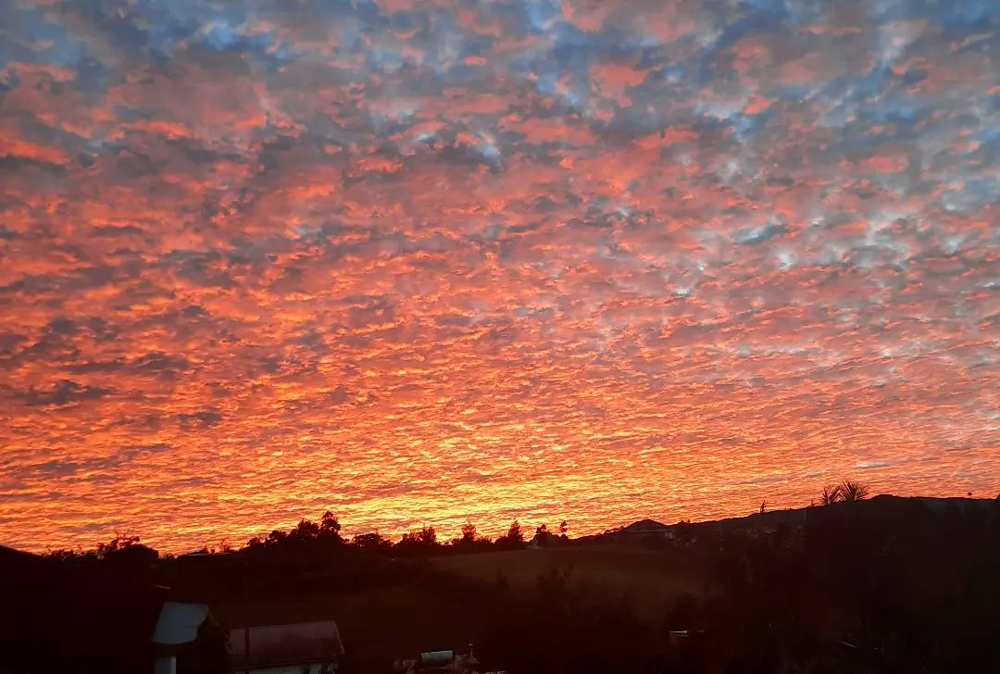
Choisissez vos gourmandises : la demande arrive toute prête sur WhatsApp, et nous vous répondons pour le retrait.
Retrait souhaité
Démonstration : sur la page finale, le message part directement vers votre WhatsApp.